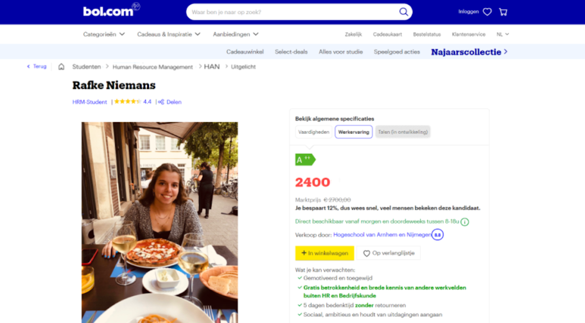

Week 1
Bij de eerste les van Communication kregen we uitleg over wat de module inhield. We gingen toen vrij snel aan de slag. Als eerste met een Mental Model, met allerlei begrippen zoals Cloud, front-end, SQL, Machine learning, AI etc. In zelfgevormde groepjes (online) gingen we bedenken hoe alle begrippen met elkaar te maken hadden. Mijn groepje kwam op het volgende model uit (via draw.io) :

Na het zien van de mental models van ook andere groepjes, werden de verbanden tussen alle begrippen wel wat duidelijker. Hierna gingen we verder met het Hello World onderdeel van de les. Het voorbeeld van Stan zijn sollicitatie bij Coolblue had ik al bij LinkedIn gezien. Zelf leek het me ook erg leuk om zoiets te maken, dus ik ging aan de slag met een voorbeeld van bol.com. Dit heb ik nog wat aangepast door tips van anderen, hierdoor werd het veel preciezer. Ik heb de feedback aangepast en het ziet er een stuk beter uit. Hier is het uiteindelijke resultaat: 
{kind=link}
Als voorbereiding voor de volgende les moesten we met HTML aan de slag gaan. Ik had er zelf nog nooit mee gewerkt, net zoals met dit programma en Platform IO (bij de module Technology). Ik vond het wel heel interessant om ermee te beginnen, omdat ik natuurlijk graag HTML, CSS, JS zou willen leren schrijven. Ik heb me vanaf het begin dan ook verdiept in de beginselen hiervan en onderzocht hoe ik mijn portfolio kan gaan ontwerpen.
Week 2
De 2e les werd er vooral veel uitgelegd over het gebruik van HTML en CSS. Het was heel leuk om hier zelf mee aan de slag te gaan en daadwerkelijk zelf een website in elkaar te zetten. HTML is de basistaal voor je website en CSS dient vooral om de opmaak van je website te beheren. Eerst wilde ik namelijk een template pakken en deze zelf aanpassen, (van Hello World) maar het leek me vooral in het begin leuker om zelf aan de slag te gaan en elementen toe te voegen. Vandaar dat ik makkelijk ben begonnen en zelf ben begonnen met html, css en javascript elementen heb toegevoegd.
Nog een deel van de les richtte zich vooral op het zelf uitproberen van verschillende functies. Hierna ging ik dan ook aan de slag met foto's en video's toevoegen, dit was ook niet zo lastig behalve het feit dat ze soms niet goed in de webpagina staan en hierdoor de opmaak niet mooi oogt.
Ik heb de foto´s daarna recht geplaatst en aangepast aan de webpagina.
Week 3
De 3e les kregen we meer uitleg over de werking van JavaScript. Waarden worden bewaard in variabelen en meerdere waarden kunnen in een array worden opgeslagen. Wiskundige berekeningen kunnen ook worden uitgevoerd door numerieke bij elkaar op te tellen, te delen etc. Variabelen kunnen echter ook tekst zijn. Bewerkingen die vaker uitgevoerd moeten worden kunnen in een functie worden vastgelegd. Dat is dan ook de minst complexe manier om JavaScript uit te leggen.
Ik heb tijdens en na de les dan ook met Javascript een aantal dingen uitgeprobeerd, namelijk een navigatiebar. De navigatiebar was wel redelijk complex, vooral het toevoegen van CSS en JS. Echter de diverse elementen die je zelf kunt toevoegen zoals font, kleur, hoogte, text-positie, margin etc zijn redelijk makkelijk toe te voegen. Een functie die steeds terugkomt bij JS is de GetElements functie. JS zorgt ervoor dat je veel meer kunt met je website, zoals functionaliteit toevoegen en ook ervoor zorgen dat het professioneler oogt. Soms is het wel lastig om JS toe te voegen, omdat je precies moet weten wat je wilt dat je website allemaal kan. Een navigatiebalk bijvoorbeeld kun je makkelijk in CSS en HTML toevoegen, maar deze zal niet werken zonder JS. Dat is hetzelfde bij andere interactieve elementen zoals een icoon waar je op klikt en dat je leidt naar een andere webpagina. Het is in ieder geval super interessant om met JS te werken, omdat er (vooral voor mij als beginner) eindeloze mogelijkheden zijn.
Week 4
Databases waren het onderwerp van de 4e les. Zelf heb ik alleen met een Database gewerkt in Microsoft Access en dit is al een tijd geleden voor een vak genaamd Informatiemanagement.
Ik heb wel al vaak in databases moeten werken en onderzoek moeten doen hoe bepaalde data verzameld wordt, tijdens meerdere vakken van de opleiding. Ik vond dit echter wel erg interessant, net zoals Big Data zelf. Nu ging het echter vooral over SQL en No-SQL databases. Ik had er wel van gehoord, maar ben niet eerder specifiek op zoek gegaan naar wat beide termen nu onderscheidt van elkaar en wat ze precies inhouden.
Ik besloot dit nu wel te doen en heb kort onderzoek gedaan naar beide termen en een tabel gemaakt om zo een beter overzicht te krijgen wat betreft SQL en NoSQL databases. De tabel is hier te vinden. Daarnaast heb ik nog wat informatie opgezocht over andere databases en ook mijn visie omschreven op bedrijven die nog niet veel gebruik maken van databases, deze informatie is ook op dezelfde pagina in te zien.
Week 5
Tijdens de 5e les gingen we aan de slag met API's. We moesten zelf 2 API's instellen, voor de COVID-19 besmettingen en het weer in Nederland. Deze heb ik dan ook geïnstalleerd, zie hier: het weer en de cijfers van COVID-19 .
Beide API's zijn ook hieronder te vinden.
Het is heel interessant om te leren hoe een API in elkaar zit, het is eigenlijk niet heel moeilijk en het is een zeer interessante functie om actuele data te fetchen via JS. De fetch functie gebruikt de url van de API als een maatstaf. Als reactie krijg je dan een stroom van
data terug. Deze datastroom wordt met .then en return omgezet naar json. De url gegevens waar de data vandaan komt zijn dan ook helemaal in JSON format, al kun je ook kiezen voor XML format. Ik heb ook uiteindelijk de Blynk API werkend gekregen, de gegevens hiervan zijn op de pagina van de IoT schakeling te vinden.
Ik heb ook op internet rondgekeken naar hoe de data het beste kon worden weergegeven en dat is in dit geval een tabel.
Ik ben ook helemaal opnieuw begonnen met een nieuwe website template, omdat ik een gestructureerder, strakker ontwerp wilde en deze ook fatsoenlijk zelf kunnen bewerken. Dit is me goed gelukt, al kostte het wel tijd om alles over te zetten vanuit de andere website.
Ik heb uiteraard deze bootstrap zelf nog veel bewerkt en dus ook een aantal elementen zelf toegevoegd, zoals bepaalde CSS/JS functies en ook in de navigatiebar. Daarnaast heb ik een kruimelpad toegevoegd bij de onderdelen van de minor onderdelen, zoals hierboven te zien is. Zo is er te zien waar welke pagina precies bijhoort.
Week 6
Een deel van de les is besteed aan het praten over hoe het ging met de opstart van de projectgroepen, net zoals bij veel van de laatste lessen, wat ook begrijpelijk is. De les ging daarna verder of Big Data en Machine Learning.
Over Big Data wist ik al redelijk veel, maar niet in combinatie met Machine Learning. Er zijn 2 algoritmes: stogastisch (draait om gokken en heeft geen zekere uitkomst) en deterministisch (zekere uitkomst).
We kregen daarna een video te zien over Reïnforcement learning en hier waren voorbeelden te zien over dingen die niet voorspeld konden worden.
Om op een makkelijke manier in de praktijk te leren over Machine Learning, gingen we in groepjes aan de slag met Teachable Machine. Deze kan door het opnemen van beelden en verwerken van codes uitkomsten bepalen.
Als je aan de camera jezelf liet zien of een telefoon, kon de computer bepalen wanneer de persoon op het beeld te zien is en wanneer de telefoon te zien was.
Ik heb de machine geleerd wanneer iemand een bril opheeft en wanneer niet, probeer het hieronder gerust uit.